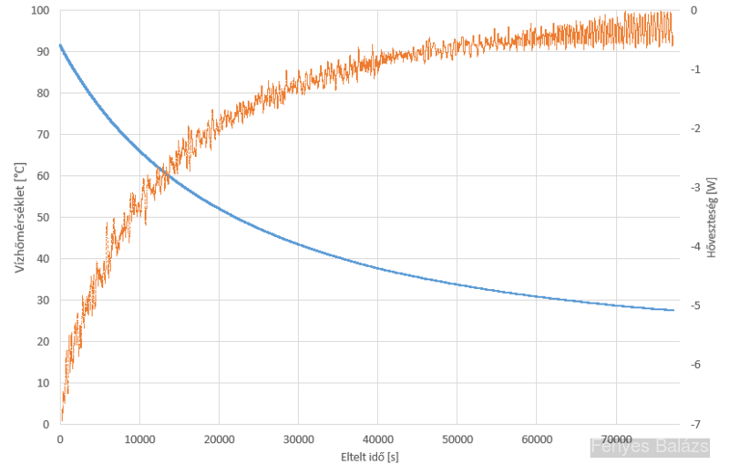

{kind=link}

Egy termoszba forrásban lévő vizet töltöttem, majd egy DS18B20 hőmérsékletszenzort helyeztem bele. (adatlap) A szenzor pontossága ±0.5°C, felbontása 0.06°C, a mérések kb. 2 másodpercenként történtek. A mérés zárt helyiségben zajlott, ezért a légmozgás minimális volt, a léghőmérséklet az asztalon lévő termosz közelébe helyezett hőmérő szerint 21±1°C volt, a fali hőmérő szerint 20.5±0.5°C. A termosz üres tömege 336 g, a víz tömege 389 g (ez a mérés elején és végén néhány grammon belül megegyezett, hiszen a lezárt edényből nem tudott a víz elpárologni). A termosz+víz rendszer hőkapacitására kb. 1.8 kJ/K értéket számítottam. A mérést 21 órán át végeztem, így kb. 40000 adatpontot kaptam.
Azt várnánk, hogy a hőmérsékleti görbe exponenciálisan csökkenve tart a környezeti hőmérséklethez, hiszen a hővezetés és a hőáramlás útján történő hőveszteség közelítőleg a belső és környezeti hőmérsékletkülönbséggel lineárisan arányos. De egy ilyen exponenciális görbét illesztve rá kiderül, hogy az első néhány órában jóval meredekebb a görbe a vártnál, ami azt mutatja, hogy ekkor még a hősugárzás révén is jelentős a hőveszteség.
